ДЗ
Импульс. ЗСИ
Выберите вариант ответа или введите полученное числовое значение.
Задача 1
Если пчела массой $m = 95\text{ мг}$ летит со скоростью, модуль которой $\upsilon = 21,6\text{ }\frac{\text{км}}{\text{ч}}$, то модуль ее импульса $p$ равен:
Решение:
Модуль импульса пчелы:
$$p = m\upsilon = 0,57\text{ }\frac{\text{г}\cdot\text{м}}{\text{с}}.$$
Задача 2
В кёрлинге по ледяной площадке пускают специальные гранитные камни. Кинематический закон движения камня вдоль оси $Ox$ имеет вид $x = A + Bt + Ct^2$, где $A = 2,0\text{ м}$, $B = 3,0\text{ }\frac{\text{м}}{\text{с}}$ и $C = -0,50\text{ }\frac{\text{м}}{\text{с}^2}$. Если масса камня $m = 19,6\text{ кг}$, то проекция импульса камня $p_x$ в момент времени $t = 0,50\text{ с}$ равна:
Решение:
Проекция скорости движения камня $\upsilon_x = \upsilon_{0x} + a_x t$, где $\upsilon_{0x} = 3,0\text{ }\frac{\text{м}}{\text{с}}$, $a_x = -1,0\text{ }\frac{\text{м}}{\text{с}^2}$. Проекция импульса камня:
$$p_x = m\upsilon_x = 49\text{ }\frac{\text{кг}\cdot\text{м}}{\text{с}}.$$
Задача 3
На рисунке 87 представлен график зависимости проекции ускорения $a_x$ куска льда массой $m = 7,0\text{ кг}$, сорвавшегося без начальной скорости с вершины горы и скользящего по ее прямолинейному склону, от времени $t$. В момент времени $t = 5,0\text{ с}$ модуль импульса куска льда $p$ равен:
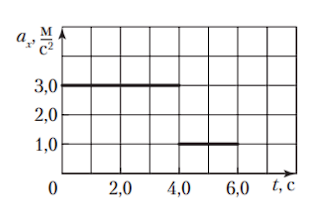
Решение:
В момент времени $t_1 = 4,0\text{ с}$ модуль скорости движения куска льда $\upsilon_1 = a_1 t_1$, где $a_1 = 3,0\text{ }\frac{\text{м}}{\text{с}^2}$. В момент времени $t_2 = t = 5,0\text{ с}$ модуль скорости движения куска льда $\upsilon_2 = \upsilon_1 + a_2(t - t_1)$, где $a_2 = 1,0\text{ }\frac{\text{м}}{\text{с}^2}$. Модуль импульса куска льда:
$$p = m\upsilon_2 = 91\text{ }\frac{\text{кг}\cdot\text{м}}{\text{с}}.$$
Задача 4
На рисунке 88 представлен график зависимости проекции перемещения $\Delta r_x$ тела массой $m = 260\text{ г}$, движущегося вдоль оси $Ox$, от времени $t$. В начальный момент времени модуль импульса тела $p_0$ равен:
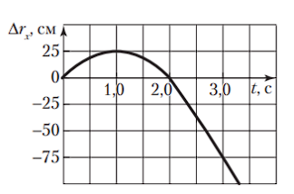
Решение:
В момент времени $t = 1,0\text{ с}$, как следует из графика (рис. 88), тело остановилось. Используя формулу средней скорости $\langle\upsilon\rangle = \frac{\Delta r}{\Delta t}$, найдем модуль начальной скорости движения тела: $\upsilon_0 = \frac{2\Delta r}{\Delta t}$, где $\Delta r = 25\text{ см}$, $\Delta t = 1\text{ с}$. В начальный момент времени модуль импульса тела:
$$p_0 = m\upsilon_0 = 0,13\text{ }\frac{\text{кг}\cdot\text{м}}{\text{с}}.$$
Задача 5
Свободно падающий шарик массой $m = 0,20\text{ кг}$ ударился о пол со скоростью, модуль которой $\upsilon = 5,0\text{ }\frac{\text{м}}{\text{с}}$, и подпрыгнул на высоту $h = 80\text{ см}$. Модуль изменения импульса $\Delta p$ шарика при ударе равен:
Решение:
Изменение импульса шарика при ударе $\Delta\vec{p} = \vec{p}_2 - \vec{p}_1$. Из рисунка 1.89 следует, что модуль изменения импульса
$$\Delta p = p_2 + p_1 = m\upsilon_1 + m\upsilon_2,$$
где $\upsilon_2$ — модуль скорости шарика после удара, которую найдем, используя формулы равнопеременного движения при подъеме шарика от пола на высоту $h$.
$$h = \frac{\upsilon_2^2 - 0}{2g} = \frac{\upsilon_2^2}{2g},\text{ откуда } \upsilon_2 = \sqrt{2gh}.$$
Тогда
$$\Delta p = m(\upsilon_1 + \upsilon_2) = m(\upsilon_1 + \sqrt{2gh}) = 0,20\text{ кг} \cdot \left(5,0\text{ }\frac{\text{м}}{\text{с}} + \sqrt{2 \cdot 9,8\text{ }\frac{\text{м}}{\text{с}^2} \cdot 0,80\text{ м}}\right) = 1,8\text{ }\frac{\text{кг}\cdot\text{м}}{\text{с}}.$$
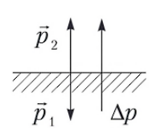
Задача 6
Шарик массой $m$, летящий со скоростью $\vec{\upsilon}$, ударяется о стенку под углом $\alpha$ к ней и отскакивает под таким же углом без потери скорости. Модуль изменения импульса $\Delta p$ шарика за время удара равен:
Решение:
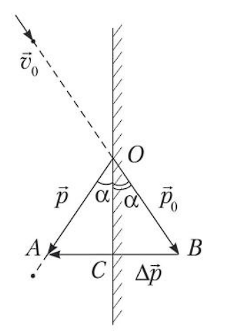
$$\frac{\Delta p}{2} = p_0\sin\alpha,\text{ откуда } \Delta p = 2p_0\sin\alpha = 2m\upsilon\sin\alpha.$$
Задача 7
Мячик массой $m = 200\text{ г}$ летел со скоростью, модуль которой $\upsilon_0 = 20\text{ }\frac{\text{м}}{\text{с}}$, и после удара о стенку отскочил от нее со скоростью, модуль которой $\upsilon = 15\text{ }\frac{\text{м}}{\text{с}}$. Если скорость $\vec{\upsilon}$ направлена под углом $\alpha = 90^\circ$ к скорости $\vec{\upsilon}_0$, то модуль изменения импульса мячика $\Delta p$ при ударе равен:
Решение:
Изменение импульса мячика $\Delta\vec{p} = \vec{p} - \vec{p}_0$. Из рисунка 466 следует: $\Delta p = \sqrt{p^2 + p_0^2}$. Учитывая, что $p_0 = m\upsilon_0$ и $p = m\upsilon$, найдем ответ:
$$\Delta p = 5,0\text{ }\frac{\text{кг}\cdot\text{м}}{\text{с}}.$$
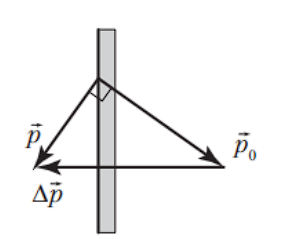
Задача 8
Если материальная точка массой $m = 1,0\text{ кг}$, двигаясь равномерно, описывает четверть окружности радиусом $R = 1,2\text{ м}$ за промежуток времени $\Delta t = 2,0\text{ с}$, то модуль изменения импульса $\Delta p$ точки за этот промежуток времени равен:
Решение:
Пусть за время $t$ материальная точка, находящаяся в точке $A$, описала четверть окружности и оказалась в точке $B$ (рис. 1.91). В положении $A$ импульс точки $\vec{p}_1 = m\vec{\upsilon}_1$, в положении $B$: $\vec{p}_2 = m\vec{\upsilon}_2$. Изменение импульса точки за этот промежуток времени составляет $\Delta\vec{p} = \vec{p}_2 - \vec{p}_1$.
Перенесем вектор $\vec{p}_1$ параллельно самому себе из точки $A$ в точку $B$. Вектор, соединяющий концы векторов $\vec{p}_1$ и $\vec{p}_2$, и есть вектор $\Delta\vec{p}$.
Модуль изменения импульса $\Delta\vec{p}$ определим, используя теорему Пифагора: $\Delta p = \sqrt{(m\upsilon_2)^2 + (m\upsilon_1)^2} = m\sqrt{\upsilon_2^2 + \upsilon_1^2}$.
По условию $\upsilon_1 = \upsilon_2 = \upsilon$. Тогда
Перенесем вектор $\vec{p}_1$ параллельно самому себе из точки $A$ в точку $B$. Вектор, соединяющий концы векторов $\vec{p}_1$ и $\vec{p}_2$, и есть вектор $\Delta\vec{p}$.
Модуль изменения импульса $\Delta\vec{p}$ определим, используя теорему Пифагора: $\Delta p = \sqrt{(m\upsilon_2)^2 + (m\upsilon_1)^2} = m\sqrt{\upsilon_2^2 + \upsilon_1^2}$.
По условию $\upsilon_1 = \upsilon_2 = \upsilon$. Тогда
$$\Delta p = m\upsilon\sqrt{2},$$
где $\upsilon$ — модуль линейной скорости.
$$\upsilon = \frac{s}{\Delta t} = \frac{\frac{2\pi R}{4}}{\Delta t} = \frac{\pi R}{2\Delta t};$$
$$\Delta p = \frac{m\pi R\sqrt{2}}{2\Delta t} = \frac{1,0\text{ кг} \cdot 3,14 \cdot 1,2\text{ м} \cdot \sqrt{2}}{2 \cdot 2,0\text{ с}} = 1,3\text{ }\frac{\text{кг}\cdot\text{м}}{\text{с}}.$$
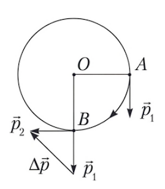
Задача 9
На рисунке 90 представлен график зависимости модуля результирующей $F$ всех сил, действующих на тело, от времени $t$. Импульс тела оставался постоянным в течение промежутка времени:
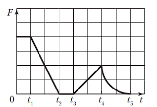
Решение:
Импульс тела остается постоянным, если внешняя сила равна нулю. Ответ: $t_3 - t_2$.
Задача 10
Резиновый шарик массой $m = 18\text{ г}$ падает без начальной скорости на горизонтальную поверхность стола с высоты $h_1 = 45\text{ см}$ и, отскочив, поднимается на максимальную высоту $h_2 = 20\text{ см}$. Соприкосновение шарика со столом длилось в течение времени $\Delta t = 0,01\text{ с}$. Если действием силы тяжести за время удара пренебречь, то модуль средней силы $\langle F\rangle$ удара шарика о стол равен:
Решение:
Модуль скорости движения шарика перед ударом $\upsilon_1 = \sqrt{2gh_1}$ и после удара $\upsilon_2 = \sqrt{2gh_2}$. Модуль изменения импульса шарика $\Delta p = m\upsilon_2 + m\upsilon_1$. Из второго закона Ньютона $\Delta p = \langle F\rangle\Delta t$ найдем ответ:
$$\langle F\rangle = 9\text{ Н}.$$
Задача 11
Если проекция импульса тела массой $m = 0,5\text{ кг}$, движущегося вдоль оси $Ox$, изменяется по закону $p_x(t) = A + Bt$, где $A = 3\text{ }\frac{\text{кг}\cdot\text{м}}{\text{с}}$, $B = 2\text{ Н}$, то проекция ускорения $a_x$ тела равна:
Решение:
Из формулы $p_x(t) = p_{0x} + F_x t$ следует, что проекция равнодействующей силы $F_x = 2\text{ Н}$. По второму закону Ньютона проекция ускорения:
$$a_x = \frac{F_x}{m} = 4\text{ }\frac{\text{м}}{\text{с}^2}.$$
Задача 12
Две частицы массами $m_1 = m$ и $m_2 = 2m$ летят со скоростями, модули которых $\upsilon_1 = 18\text{ }\frac{\text{м}}{\text{с}}$ и $\upsilon_2 = 36\text{ }\frac{\text{м}}{\text{с}}$ соответственно, причем скорости частиц взаимно перпендикулярны (рис. 91). На частицы в течение некоторого времени действуют одинаковые силы. Если к моменту прекращения действия сил первая частица начинает двигаться в обратном направлении со скоростью, модуль которой $u_1 = 36\text{ }\frac{\text{м}}{\text{с}}$, то вторая частица к этому моменту времени будет двигаться со скоростью, модуль которой $u_2$ равен:
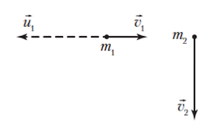
Решение:
Из второго закона Ньютона $\Delta p_1 = F\Delta t$ и формулы $\Delta p_1 = mu_1 + m\upsilon_1$ найдем модуль импульса силы: $F\Delta t = mu_1 + m\upsilon_1$. На рисунке 467 показаны импульсы второй частицы $m_2\vec{\upsilon}_2$ и $m_2\vec{u}_2$ до и после действия силы $\vec{F}$. По теореме Пифагора $(m_2 u_2)^2 = (F\Delta t)^2 + (m_2 \upsilon_2)^2$. Из записанных уравнений найдем ответ:
$$u_2 = 45\text{ }\frac{\text{м}}{\text{с}}.$$
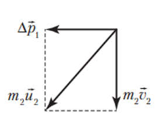
Задача 13
Навстречу мальчику, бегущему со скоростью, модуль которой $\upsilon_1 = 4,0\text{ }\frac{\text{м}}{\text{с}}$, движется тележка, модуль скорости которой $\upsilon_2 = 3,0\text{ }\frac{\text{м}}{\text{с}}$. Масса мальчика $m_1 = 50\text{ кг}$, масса тележки $m_2 = 80\text{ кг}$. Мальчик вскакивает на тележку. Модуль скорости $\upsilon_3$ тележки с мальчиком будет равен:
Решение:
На механическую систему (мальчик и тележка) действуют силы тяжести и силы реакции, направленные вертикально. Если трением пренебречь, то в горизонтальном направлении силы не действуют. Тогда проекция импульса системы в горизонтальном направлении не изменяется и можно записать закон сохранения импульса в проекциях на направление движения тележки:
$$m_2\upsilon_2 - m_1\upsilon_1 = (m_1 + m_2)\upsilon_{3x},$$
где $\upsilon_3$ — модуль скорости тележки с мальчиком.
$$\upsilon_{3x} = \frac{m_2\upsilon_2 - m_1\upsilon_1}{m_1 + m_2} = \frac{80\text{ кг} \cdot 3,0\text{ }\frac{\text{м}}{\text{с}} - 50\text{ кг} \cdot 4,0\text{ }\frac{\text{м}}{\text{с}}}{80\text{ кг} + 50\text{ кг}} \approx 0,31\text{ }\frac{\text{м}}{\text{с}}.$$
Так как $\upsilon_{3x} > 0$, то тележка с мальчиком продолжит движение в прежнем направлении.
Задача 14
Граната в верхней точке траектории разрывается на два осколка массами $m_1 = 1,5\text{ кг}$ и $m_2 = 1,0\text{ кг}$. Скорость большего осколка осталась после разрыва горизонтальной и ее модуль возрос до $\upsilon_1 = 25\text{ }\frac{\text{м}}{\text{с}}$. Модуль скорости гранаты перед разрывом $\upsilon_0 = 12\text{ }\frac{\text{м}}{\text{с}}$. Модуль скорости $\upsilon_2$ меньшего осколка составляет:
Решение:
Так как время разрыва гранаты мало, то для нахождения скорости меньшего осколка можно применить закон сохранения импульса $(m_1 + m_2)\vec{\upsilon}_0 = m_1\vec{\upsilon}_1 + m_2\vec{\upsilon}_2$.
Предположим, что скорость $\vec{\upsilon}_2$ осколка $m_2$ направлена противоположно направлению оси $Ox$ (рис. 1.92). Запишем закон сохранения импульса в проекциях на ось $Ox$
Предположим, что скорость $\vec{\upsilon}_2$ осколка $m_2$ направлена противоположно направлению оси $Ox$ (рис. 1.92). Запишем закон сохранения импульса в проекциях на ось $Ox$
$$(m_1 + m_2)\upsilon_0 = m_1\upsilon_1 - m_2\upsilon_2,$$
откуда
$$\upsilon_2 = \frac{m_1\upsilon_1 - (m_1 + m_2)\upsilon_0}{m_2} = \frac{1,5\text{ кг} \cdot 25\text{ }\frac{\text{м}}{\text{с}} - (1,5\text{ кг} + 1,0\text{ кг}) \cdot 12\text{ }\frac{\text{м}}{\text{с}}}{1,0\text{ кг}} = 7,5\text{ }\frac{\text{м}}{\text{с}}.$$
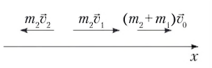
Задача 15
Ядро, летевшее горизонтально со скоростью, модуль которой $\upsilon_0 = 20\text{ }\frac{\text{м}}{\text{с}}$, разорвалось на два осколка массами $m_1 = 5,0\text{ кг}$ и $m_2 = 10\text{ кг}$. При этом модуль скорости меньшего осколка сразу после разрыва оказался $\upsilon_1 = 80\text{ }\frac{\text{м}}{\text{с}}$. Если скорость $\vec{\upsilon}_1$ направлена вертикально вниз, то модуль скорости $\upsilon_2$ большего осколка сразу после разрыва равен ... $\frac{\text{м}}{\text{с}}$.
Решение:
На рисунке 470 показаны импульсы ядра $m\vec{\upsilon}_0$ и осколков $m_1\vec{\upsilon}_1$ и $m_2\vec{\upsilon}_2$. По закону сохранения импульса $m\vec{\upsilon}_0 = m_1\vec{\upsilon}_1 + m_2\vec{\upsilon}_2$, где $m = m_1 + m_2$. Используя теорему Пифагора, найдем ответ:
$$\upsilon_2 = \frac{\sqrt{(m_1 + m_2)^2\upsilon_0^2 + (m_1\upsilon_1)^2}}{m_2} = 50\text{ }\frac{\text{м}}{\text{с}}.$$
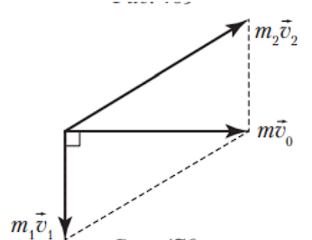
Задача 16
Граната, летевшая горизонтально разорвалась на две части массами $m_1$ и $m_2 = 0,5m_1$. Скорость большего осколка, модуль которой $\upsilon_1 = 30\text{ }\frac{\text{м}}{\text{с}}$, направлена вверх под углом $\alpha = 60^\circ$ к горизонту. Если модуль скорости меньшего осколка $\upsilon_2 = 60\text{ }\frac{\text{м}}{\text{с}}$, то модуль скорости $\upsilon_0$ гранаты перед разрывом равен ... $\frac{\text{м}}{\text{с}}$.
Решение:
Запишем закон сохранения импульса: $(m_1 + m_2)\vec{\upsilon}_0 = m_1\vec{\upsilon}_1 + m_2\vec{\upsilon}_2$. По теореме косинусов (рис. 471) запишем уравнение: $(m_2\upsilon_2)^2 = (m_1 + m_2)^2\upsilon_0^2 + (m_1\upsilon_1)^2 - 2(m_1 + m_2)\upsilon_0 m_1\upsilon_1\cos\alpha$. Учитывая соотношение между массами осколков и $\cos\alpha = 0,5$, получим уравнение:
$$9\upsilon_0^2 - 6\upsilon_1\upsilon_0 + 4\upsilon_1^2 - \upsilon_2^2 = 0.\text{ Отсюда } \upsilon_0 = 20\text{ }\frac{\text{м}}{\text{с}}.$$
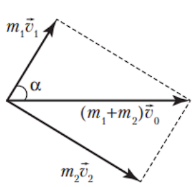
Задача 17
Если два тела массами $m_1$ и $m_2$ двигались навстречу друг другу со скоростями, модули которых соответственно $\upsilon_1 = 4\text{ }\frac{\text{м}}{\text{с}}$ и $\upsilon_2 = 20\text{ }\frac{\text{м}}{\text{с}}$, и в результате абсолютно упругого удара обменялись скоростями (первое тело начало двигаться в противоположном направлении и модуль скорости $\upsilon_1' = 20\text{ }\frac{\text{м}}{\text{с}}$, а второе — $\upsilon_2' = 4\text{ }\frac{\text{м}}{\text{с}}$), то отношение $\frac{m_1}{m_2}$ масс этих тел равно:
Решение:
Запишем закон сохранения импульса для системы тел:
$$m_1\vec{\upsilon}_1 + m_2\vec{\upsilon}_2 = m_1\vec{\upsilon}_1' + m_2\vec{\upsilon}_2'.$$
В проекциях на ось $Ox$ с учетом направления скоростей (рис. 1.95) имеем: $m_1\upsilon_1 - m_2\upsilon_2 = -m_1\upsilon_1' + m_2\upsilon_2'$. Согласно условию $\upsilon_1' = \upsilon_2$; $\upsilon_2' = \upsilon_1$, откуда $m_1(\upsilon_1 + \upsilon_2) = m_2(\upsilon_1 + \upsilon_2)$. Отношение масс:
$$\frac{m_1}{m_2} = 1.$$
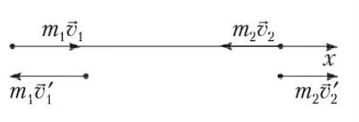
Задача 18
Шар массой $m_1 = 200\text{ г}$, катящийся по горизонтальной поверхности со скоростью, модуль которой $\upsilon_1 = 5,0\text{ }\frac{\text{м}}{\text{с}}$, неупруго ударяется в шар массой $m_2 = 600\text{ г}$, катящийся в том же направлении со скоростью, модуль которой $\upsilon_2 = 1,0\text{ }\frac{\text{м}}{\text{с}}$. Если после центрального удара шары движутся как единое целое, то модуль скорости $\upsilon$ движения шаров равен:
Решение:
Из закона сохранения импульса следует:
$$\upsilon = \frac{m_1\upsilon_1 + m_2\upsilon_2}{m_1 + m_2} = 2,0\text{ }\frac{\text{м}}{\text{с}}.$$
Задача 19
Два пластилиновых шарика массами $m_1 = m_0$ и $m_2 = 2m_0$, модули скоростей которых одинаковы ($\upsilon_1 = \upsilon_2$), двигались по взаимно перпендикулярным направлениям по горизонтальной плоскости (рис. 92). Если в результате столкновения шарики стали двигаться как единое целое, то направление их движения после столкновения на рисунке показано стрелкой:
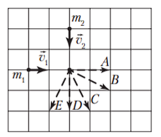
Решение:
Так как $m_2 = 2m_1$, то модуль импульса второго шарика в два раза больше модуля импульса первого шарика. На рисунке 468 показаны импульсы шариков $\vec{p}_1$ и $\vec{p}_2$ до столкновения. В соответствии с законом сохранения импульса $\vec{p}_1 + \vec{p}_2 = \vec{p}$ на рисунке показан импульс шариков $\vec{p}$ после их столкновения. Стрелка, обозначенная буквой $C$, показывает направление движения шариков после столкновения.
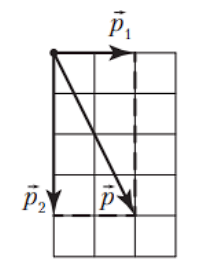
Задача 20
На поверхности озера покоятся две одинаковые лодки массами $m_1 = 40\text{ кг}$ каждая. Рыбак массой $m_2 = 80\text{ кг}$ из первой лодки перепрыгнул во вторую. Если первая лодка во время прыжка приобрела скорость, модуль которой $\upsilon_1 = 3,0\text{ }\frac{\text{м}}{\text{с}}$, то без учета сопротивления воды вторая лодка сразу после прыжка рыбака приобрела скорость, модуль которой $\upsilon_2$ равен:
Решение:
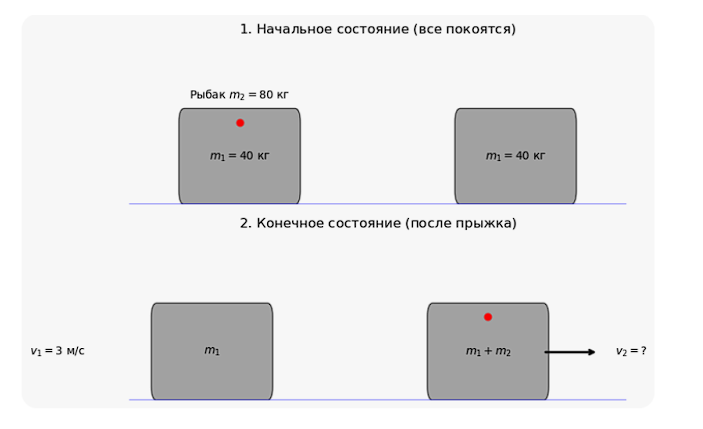
$$0 = -m_1 \cdot \upsilon_1 + (m_1 + m_2) \cdot \upsilon_2$$
$$\upsilon_2 = \frac{m_1\upsilon_1}{m_1 + m_2} = 1,0\text{ }\frac{\text{м}}{\text{с}}.$$
Задача 21
На горизонтальной гладкой поверхности лежит металлический брусок массой $m_1 = 1,2\text{ кг}$. Пуля массой $m_2 = 4,0\text{ г}$, летящая горизонтально со скоростью, модуль которой $\upsilon_2 = 500\text{ }\frac{\text{м}}{\text{с}}$, попадает в центр боковой грани бруска. Если после столкновения пуля отскакивает в противоположную сторону со скоростью, модуль которой $u_2 = 400\text{ }\frac{\text{м}}{\text{с}}$, то модуль скорости $u_1$ бруска после удара пули равен:
Решение:
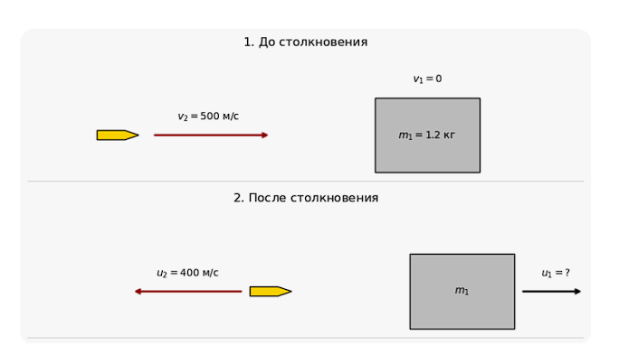
$$m_2 \cdot \upsilon_2 = m_1 \cdot u_1 - m_2 \cdot u_2$$
Выразим скорость бруска $u_1$:
$$m_1 \cdot u_1 = m_2 \cdot \upsilon_2 + m_2 \cdot u_2$$
$$u_1 = \frac{m_2 \cdot (\upsilon_2 + u_2)}{m_1}$$
Подставим численные значения:
$$u_1 = \frac{0,004 \cdot (500 + 400)}{1,2} = \frac{0,004 \cdot 900}{1,2} = \frac{3,6}{1,2} = 3,0\text{ м/с}$$
Задача 22
С ледяной гладкой горки, составляющей с горизонтом угол $\alpha = 30^\circ$, соскальзывает плоская льдина массой $m_1 = 6,0\text{ кг}$. Мальчик с некоторой высоты бросает ком снега массой $m_2 = 4,0\text{ кг}$, который, падая вертикально, попадает на льдину и прилипает к ней. Если в момент столкновения с льдиной модуль скорости кома снега был $\upsilon_2 = 60\text{ }\frac{\text{дм}}{\text{с}}$, а модуль скорости льдины в этот момент времени был $\upsilon_1 = 40\text{ }\frac{\text{дм}}{\text{с}}$, то непосредственно после столкновения льдина с прилипшим к ней снегом будет иметь скорость, модуль которой $\upsilon$ равен:
Решение:
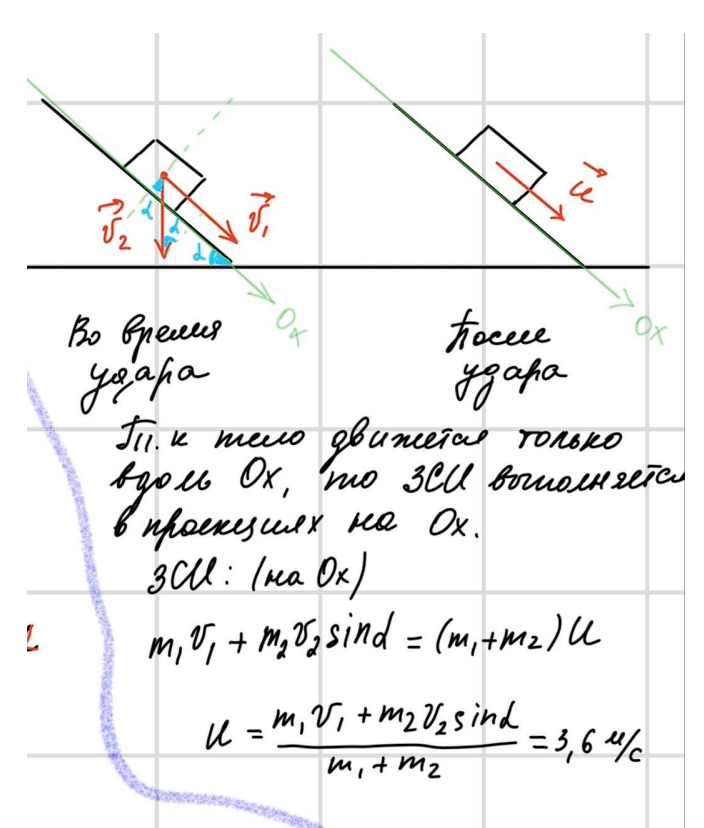
После удара
Т.к тело движется только вдоль $Ox$, то ЗСИ выполняется в проекциях на $Ox$.
ЗСИ: (на $Ox$)
$$m_1\upsilon_1 + m_2\upsilon_2\sin\alpha = (m_1 + m_2)u$$
$$u = \frac{m_1\upsilon_1 + m_2\upsilon_2\sin\alpha}{m_1 + m_2} = 3,6\text{ м/с}$$
Задача 23
Человек, стоя на коньках, бросает в горизонтальном направлении шар массой $m_2 = 3,0\text{ кг}$ со скоростью, модуль которой $\upsilon_2 = 8,0\text{ }\frac{\text{м}}{\text{с}}$, и откатывается назад. Коэффициент трения коньков о лед $\mu = 0,016$. Если человек после броска шара останавливался в течение промежутка времени $\Delta t = 2,0\text{ с}$, то масса $m_1$ человека равна ... кг.
Решение:
По закону сохранения импульса $0 = m_1\upsilon_1 - m_2\upsilon_2$. По второму закону Ньютона в импульсной форме $F_{\text{тр}}\Delta t = m_1\upsilon_1$, где $F_{\text{тр}} = \mu m_1 g$ — модуль силы трения, действующей на человека. Из записанных уравнений найдем ответ:
$$m_1 = 75\text{ кг}.$$
Задача 24
Брусок массой $m_2 = 0,49\text{ кг}$ лежит на горизонтальной поверхности. В него попадает горизонтально летящая пуля массой $m_1 = 10\text{ г}$ и застревает в нем. Если модуль скорости пули перед попаданием в брусок $\upsilon_1 = 70\text{ }\frac{\text{м}}{\text{с}}$, а коэффициент трения между бруском и поверхностью $\mu = 0,10$, то путь $s$, который пройдет брусок до остановки, равен ... см.
Решение:
По закону сохранения импульса $m_1\upsilon_1 = (m_1 + m_2)\upsilon_2$. По второму закону Ньютона $F_{\text{тр}}\Delta t = (m_1 + m_2)\upsilon_2$, где $F_{\text{тр}} = \mu(m_1 + m_2)g$ — модуль силы трения, действующей на брусок. Путь $s = \langle\upsilon\rangle\Delta t = \frac{\upsilon_2}{2}\Delta t$. Из записанных уравнений найдем ответ:
$$s = \frac{m_1^2\upsilon_1^2}{2g\mu(m_1 + m_2)^2} = 98\text{ см}.$$
Задача 25
Кусок пластилина массой $m_1 = 32\text{ г}$ попадает в брусок массой $m_2 = 192\text{ г}$, двигающийся по гладкой горизонтальной поверхности стола (рис. 94), и прилипает к нему. Перед ударом модуль скорости куска пластилина $\upsilon_1 = 7\text{ }\frac{\text{м}}{\text{с}}$, а модуль скорости бруска $\upsilon_2 = 1,75\text{ }\frac{\text{м}}{\text{с}}$. Если угол между скоростью $\vec{\upsilon}_1$ и горизонтом $\alpha = 60^\circ$, а скорости $\vec{\upsilon}_1$ и $\vec{\upsilon}_2$ лежат в одной вертикальной плоскости, то модуль скорости $\upsilon$ бруска с пластилином после удара равен ... $\frac{\text{м}}{\text{с}}$.
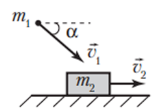
Решение:
При взаимодействии сохраняется проекция импульса системы на горизонтальную ось: $m_1\upsilon_1\cos\alpha + m_2\upsilon_2 = (m_1 + m_2)\upsilon$. Отсюда:
$$\upsilon = 2\text{ }\frac{\text{м}}{\text{с}}.$$
Задача 26
Пуля массой $m_1 = 10\text{ г}$, летящая горизонтально (рис. 95), попадает в центр шара массой $m_2 = 30\text{ г}$, лежащего на краю стола, и застревает в нем. Модуль скорости пули перед попаданием в шар $\upsilon_1 = 32\text{ }\frac{\text{м}}{\text{с}}$. Если высота стола $h = 85\text{ см}$, то модуль скорости $\upsilon$, с которой шар с пулей упадет на пол, равен ... $\frac{\text{м}}{\text{с}}$.
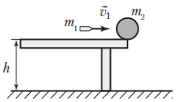
Решение:
При ударе пули и шара (рис. 474) выполняется закон сохранения импульса:
$$m_1\upsilon_1 = (m_1 + m_2)\upsilon_2.\text{ Отсюда } \upsilon_2 = \frac{m_1\upsilon_1}{m_1 + m_2}.$$
Эта горизонтальная скорость $\vec{\upsilon}_2$ будет сохраняться в течение свободного падения шара с пулей. В момент падения на пол шар приобретет вертикальную составляющую скорости $\upsilon_y = \sqrt{2gh}$. Тогда модуль конечной скорости $\upsilon = \sqrt{\upsilon_x^2 + \upsilon_y^2}$, где $\upsilon_x = \upsilon_2$. Из записанных уравнений получим:
$$\upsilon = \sqrt{\left(\frac{m_1}{m_1 + m_2}\right)^2\upsilon_1^2 + 2gh} = 9\text{ }\frac{\text{м}}{\text{с}}.$$
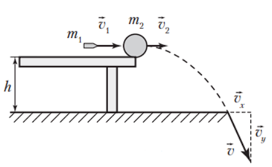